软件测试笔记
1 软件测试概述
故障、错误&失败
软件故障(fault)：软件中的一个静态的缺陷。
软件错误(error)：软件运行中一个不正确的内部状态，这是某个故障的表现。
软件失败(failure)：一个与软件需求或者是预期行为描述不相符的、外在的行为。
1
2
3
4
5
6
7
8
9
10
11
12public static void CSta (int [ ] numbers)
{
int length = numbers.length; //(PIE Model - 3: int length = numbers.length-1; )
double mean, sum;
sum = 0.0;
for (int i = 1; i < length; i++)**//i=0**
{
sum += numbers [ i ];
}
mean = sum / (double) length;
System.out.println ("mean: " + mean);
}软件错误：Input: [3,4,5] sum=4+5 ( × )
软件失败：Input: [3,4,5] sum=4+5 mean=3 ( × )
PIE模型
- Execution/Reachability 执行/可达性：执行必须通过错误的代码。
- Infection 感染：在执行错误代码的时候必须触发出一个错误的中间状态。
- Propagation 传播：错误的中间状态必须传播到最后输出，使得观测到输出结果与预期结果不一致，即失效。
- 测试可能无法执行故障的位置。
- 一个测试执行到包含错误的代码，不一定会产生错误的中间状态。Test Input: [0,4,5] sum=4+5 mean=3
- 产生了错误的中间状态，不一定会失效(failure)。Test Input: [3,5,4] sum=3+5 mean=8/2=4
Q: 是否存在一个fault，任何测试都不会将其测试出来？这样还能称之为fault吗？
A: 存在这样的fault。
概念
- 测试用例(test case)：所有测试用例的基类，它是软件测试中最基本的组成单元。
- 测试输入：测试数据
- 测试预期输出(test oracle)：软件中给定输入的预期输出
- 其他：环境
- 测试预言(test oracle)：软件中给定输入的预期输出，测试用例的一部分。自动测试中最难的问题：测试预言的生成。
- 测试夹具(test fixture)：一个固定/已知的环境状态以确保测试可重复并且按照预期方式运行
- 测试套件(test suite)：一组测试用例。通常这些测试用例具有相似的先决条件和配置，可以按顺序一起运行。用于不同目的的不同测试套件。
- 测试脚本(test script)：自动运行一系列测试用例或测试套件的脚本。
- 测试驱动程序(test driver)：可以加载测试用例集或测试套件的软件框架，还可以处理预期输出和实际输出之间的配置和比较。
- 测试充分性(test adequacy)：用以判断一个软件的一组测试数据的充分性的规则。eg. 语句/分支覆盖率
- Testing vs. Debugging
- Testing 是通过执行测试和观察失败来发现一个bug。
- Debugging是通过定位、理解和纠正故障( fault)来修复bug。
- Verification vs. Validation
- Verification：确保产品，服务或系统满足客户和其他确定的利益相关者的需求。
- Validation：评估产品，服务或系统是否符合法规、要求、规范或强制条件。 它通常是一个内部过程。
- Static Testing vs. Dynamic Testing
- 静态测试：不运行被测程序本身。
- 动态测试：运行被测程序。
- Black-box Testing vs. White-box Testing
- 黑盒测试：没有源代码。
- 白盒测试：有源代码。
- V模型： 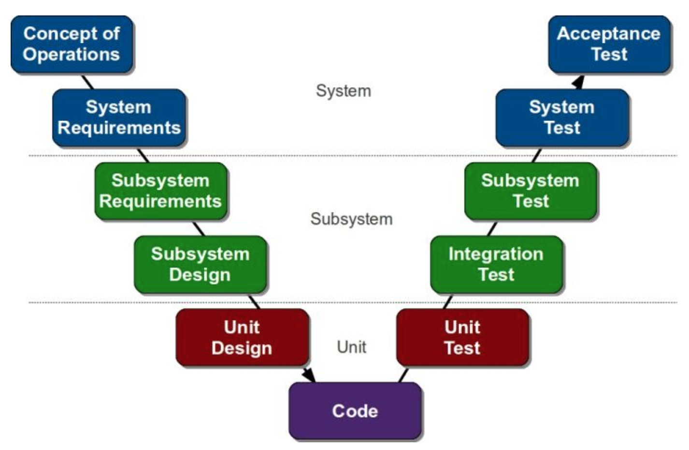
C2 单元测试
- 单元测试：每个模块的测试。
- 集成测试：测试模块之间的交互。
- 系统测试：开发人员对整个系统进行测试。
- 验收测试：根据需求和用户需要来评估软件。没有正式测试用例的客户根据用户要求验证系统。
单元测试
- 测试软件的基本模块：功能，类，组件
- 揭示典型问题
- 本地数据结构
- 算法
- 边界条件
- 错误处理
- 为什么单元测试？
- 分而治之的方法：将系统拆分为单位，单独调试单元。
- 缩小可能存在错误的地方，不想追逐其他单元的错误。
- 如何单元测试？
- 分层构建系统：从不依赖于其他的类开始，继续测试已经测试的类
- 好处：避免编写模拟类。当测试一个模块时，它所依赖的模块是可靠的。
- 单元测试框架
- xUnit
- JUnit
C3 白盒测试
1. 测试中的图
图G定义如下：G =（V，E）
- V：有限的非空顶点集V = {v1，v2，v3，v4}
- E：一组边（顶点对）E = {（v1，v2），（v1，v3），（v2，v4），（v3，v4）}
- V0：一组初始节点，V0 = {v1}
- Vf：一组最终节点，Vf = {v4}
- V0和Vf是V的子集
- 图中允许存在多个初始节点，至少要有一个终止节点(或者多个)。
Q：一个顶点是一个图吗？(Yes) E可以是一个无限的集合吗？(No)
**路径(Path)**：一个节点序列[v1，v2，… ，vn]
- 每对邻近节点(vi, vi+1)都是一条边(属于边集合E)
- 路径的长度：边的数量
- 长度为0的路径：单个节点的路径。
- 子路径：路径p的子路径是p的一个子序列(也可能是p自己)
测试路径：从初始节点(V0中某个节点)开始到最终节点(Vf中某个节点)结束的路径。
- 每个测试用例都只游历图G中的一条测试路径。
- 一条测试路径可以对应多个测试用例。(多对一)
- 一些测试路径不会被任何测试用例执行。(不可达：图G中的节点从V0中任何节点开始都无法在语法上到达，也无法满足覆盖准则)
测试和测试路径
- **path( t )**：测试 t 执行的测试路径
- path( T )：由一组测试执行的测试路径集 T
2. 图覆盖准则
可达：从一个初始节点开始所有节点和边都语法可达的图。
v1可达v2：存在一条路径开始于v1，终止于v2。
v1可达图G’：存在一条路径开始于v1，终止于图G中的某个节点。
语法可达：图G中语法上存在一条路径。
语义可达：存在测试用例执行该路径。
覆盖：
- 测试路径p覆盖节点v：v在p中
- 测试路径p覆盖边e：e在p中
- 测试路径p覆盖子路径p’：p’在p中
图覆盖
- 结构图覆盖
- 数据流覆盖
测试需求集**( TR )**：描述测试路径的属性
图覆盖：给定一个图覆盖准则C所包含的测试需求集TR，当且仅当对于TR中的每个测试需求tr，**测试路径集path( T )**中都至少存在一个测试路径p满足tr的时候，测试用例集T满足图G的覆盖准则C。
3. 结构化的覆盖准则
节点覆盖(VC)
- 当且仅当对于 V 中每个语法可达的节点 v，测试用例集T满足path( T )存在路径p使得p覆盖v。即测试用例集T在图G上满足节点覆盖。
- TR包含G中的每个可达的节点。
边覆盖(EC)
当且仅当对于 E 中的每个语法可达边e，测试用例集T满足path( T )中存在路径p使得p覆盖e。即测试用例集T在图G上满足边覆盖。
TR包含G中的每个可达的边。
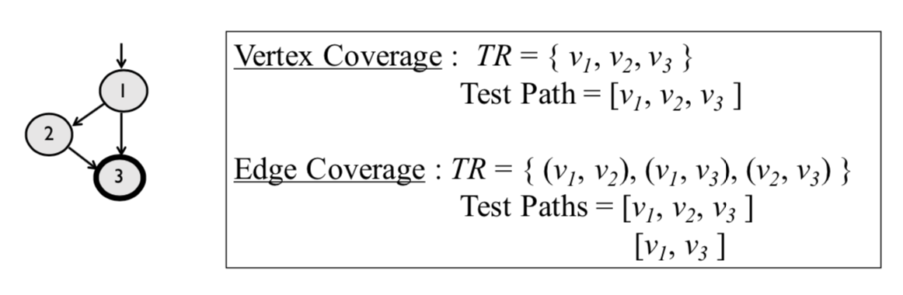**对边覆盖(EPC)**：TR包含G中每个可达的长度小于等于2的路径。
**全路径覆盖(CPC)**：TR中包含G中所有的路径。
**n-Path Coverage(nPC)**：TR包含每个可达长度小于等于n的路径。
包含(Subsume)关系：
C1包含C2，表示为C1 ≧ C2
对任意测试用例集T，假如T满足C1，则T一定满足C2。
C1≧ C2 does not imply that T1 satisfying C1 can detect any fault detected by T2 which satisfies C2.
C1≧ C2不意味着满足C1的T1可以检测到满足C2的T2检测到的故障。
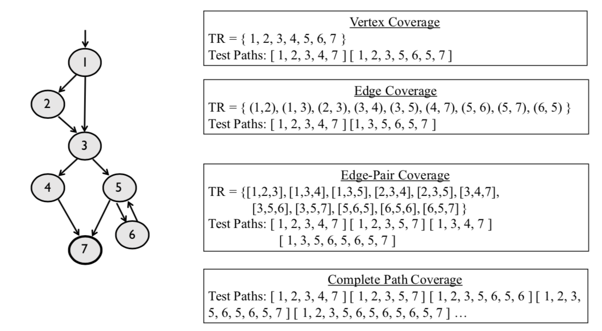
4. 控制流图(CFG)及其覆盖
控制流图(CFG)
- 使用图表符号表示在执行期间可能遍历程序的所有路径的表示。
- 边与每条可能的分支对应，节点与一系列的语句对应。
基本块
- 一段最长的可以被同时执行的程序语句序列。如果这个基本块中的一条语句被执行，那么这个块中所有语句都要被执行。
- 一个基本块只有一个起始点和一个终点。
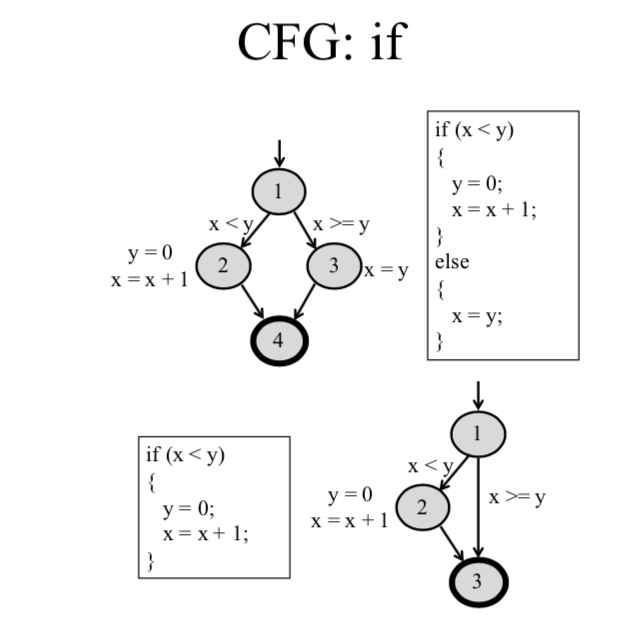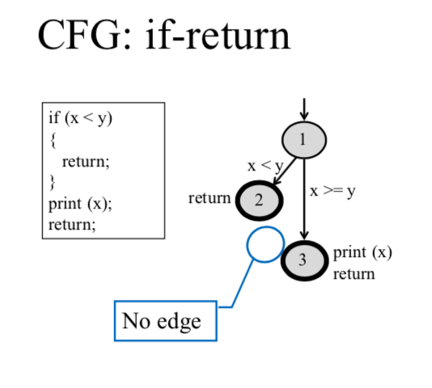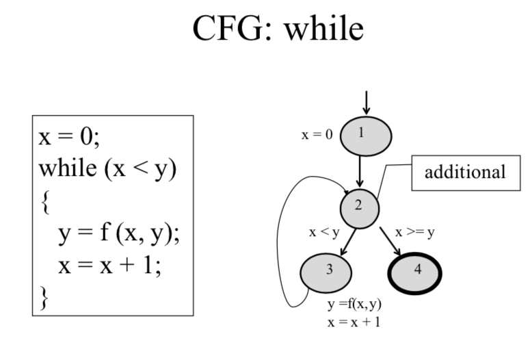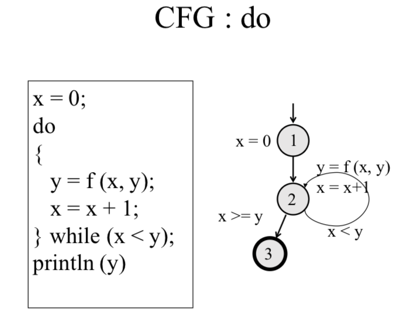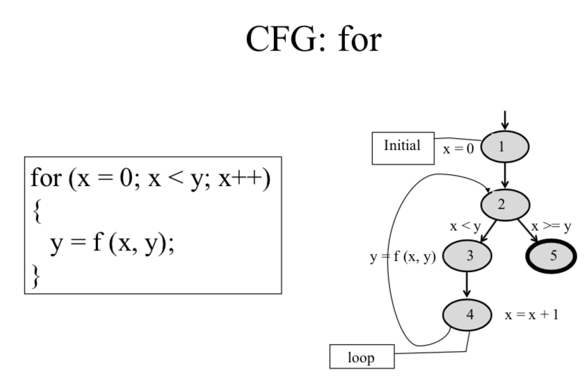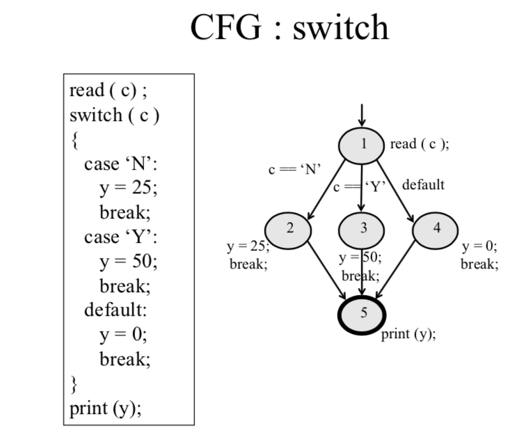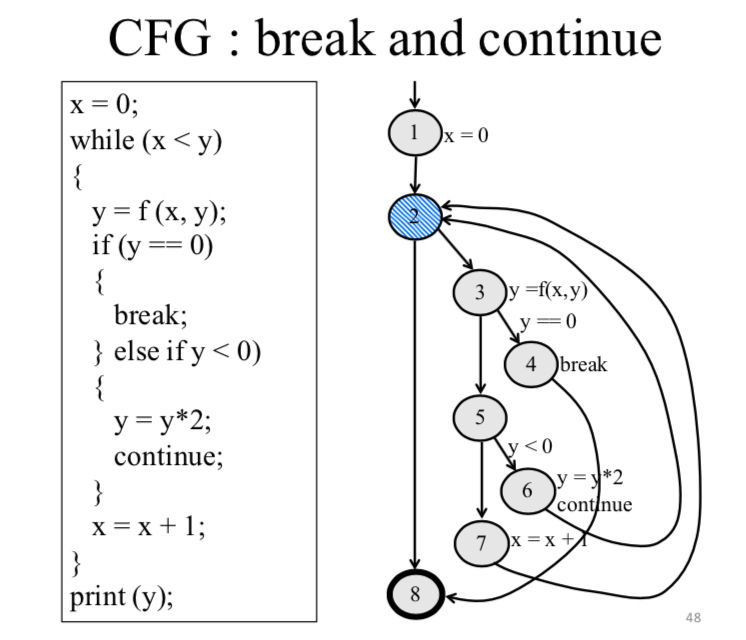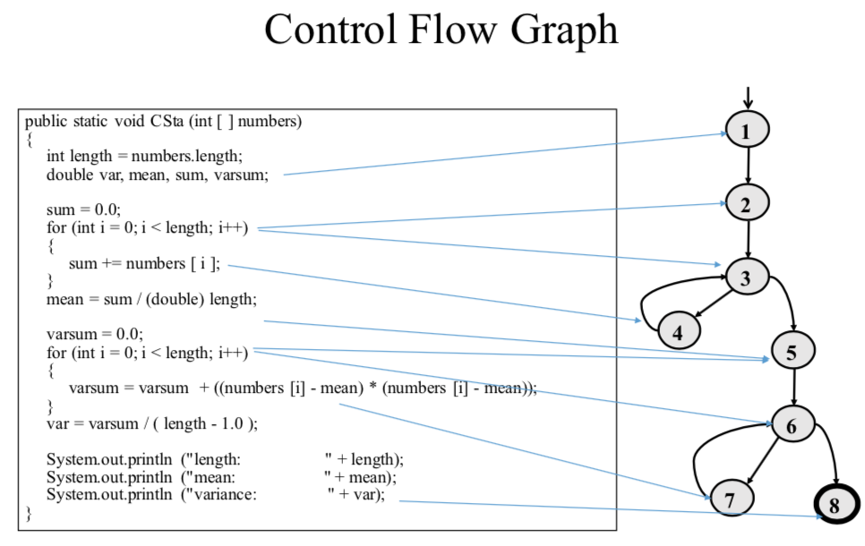
语句覆盖率：SCov = 4 / 5 = 80%
分支覆盖率：BCov = 2 / 4 = 50%
路径覆盖率：PCov = 1 / 4 = 25%
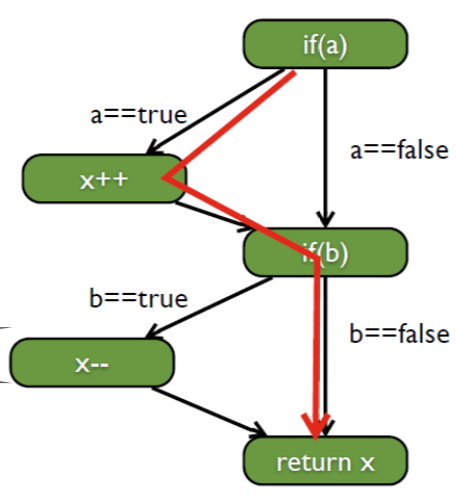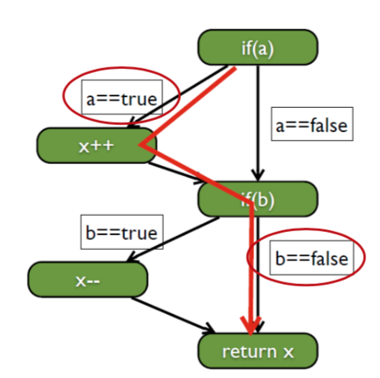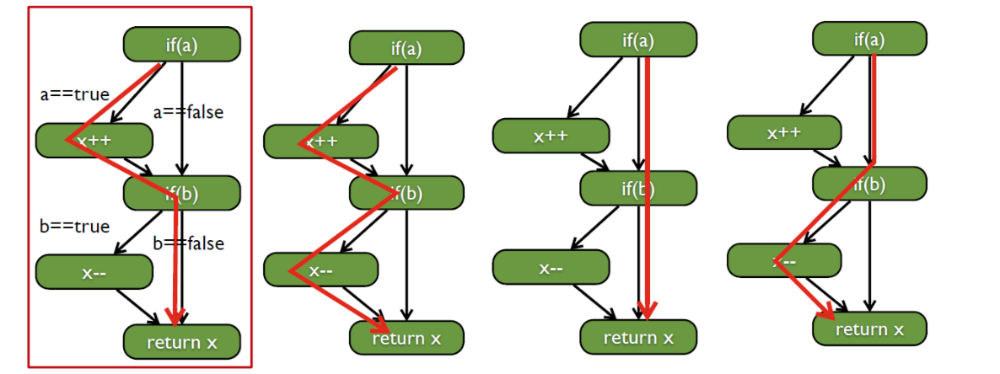
如果测试套件达到100%分支覆盖率，则一定达到100%语句覆盖率。
如果测试套件达到100%路径覆盖率，则一定达到100%分支覆盖率。反之未必。
路径覆盖 -> 分支覆盖 -> 语句覆盖 (路径覆盖严格包含分支覆盖，分支覆盖严格包含语句覆盖)
- 路径覆盖：被测试程序中的每一个语句至少被执行一次。实际运用中语句覆盖很难发现代码中的问题。
- 分支覆盖：被测试程序中的每一个分支都至少执行一次。
- 语句覆盖：覆盖程序中所有可能的执行路径。
基于CFG的覆盖
有效性：大约65％的错误可以在单元测试中捕获，单元测试由控制流测试方法主导，语句和分支测试在控制流测试中占主导地位。
局限性：某些方面的100％覆盖率不能保证软件没有错误。
Test: assertEquals(1, sum(1,0))
1
2
3public int sum(int x, int y){
return x-y; //should be x+y
}
5. 主路径覆盖(Prime Path Coverage, PPC)
简单路径
- 从ni到nj的路径，当且仅当在这条路径中没有任何节点出现超过一次(除了初始节点和终止节点相同的情况)
- 简单路径可以是一个自环，但它没有内在的循环。
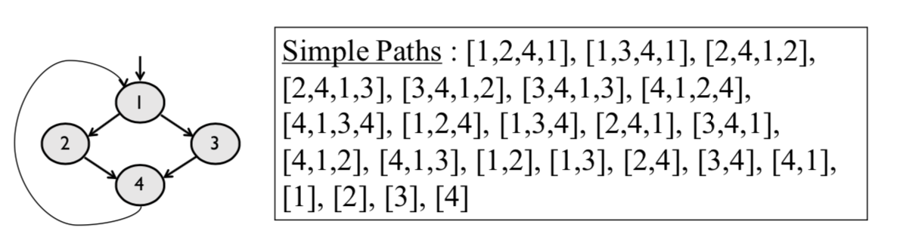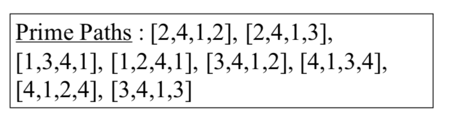
主路径：
- 一条简单路径，且它不是任何其他简单路径的子路径。
- 最大长度的简单路径。
往返路径：长度非0且初始节点和终止节点相同的主路径。
主路径覆盖(PPC)
- TR包含G中每条主路径。
简单往返路径(SRTC)
- 对于G中所有可达的，且可以作为往返路径起点和终点的节点，TR包含至少一条往返路径。
完全往返路径(CRTC)
- 对于G中所有可达的节点，TR包含所有的往返路径。 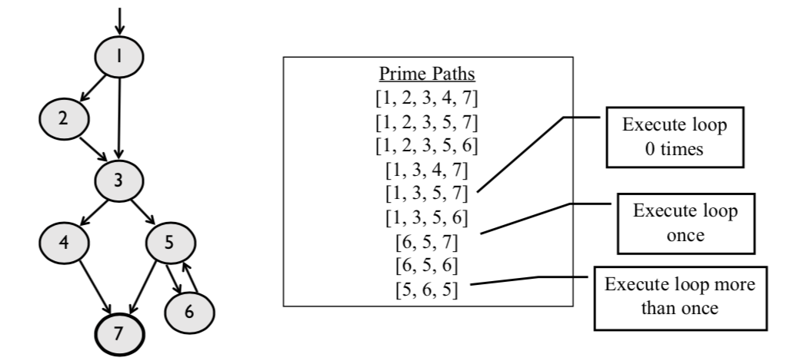
主路径覆盖练习：
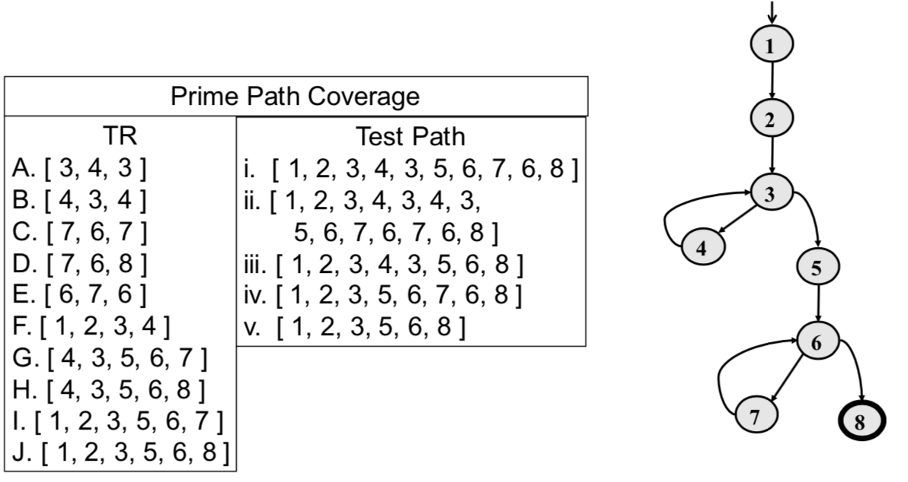
6. 基本路径覆盖
- 独立路径：一条独立路径是指和其他的独立路径相比，至少引入一个新处理语句或一个新判断的程序通路。
- **圈复杂度(Cyclomatic Complexity, CC)**：
- 一种为程序逻辑复杂性提供定量测度的软件度量，将该度量用于计算程序的基本的独立路径数目，为确保所有语句至少执行一次的测试数量的上界。
- 独立路径必须包含一条在定义之前不曾用到的边。
- 计算方法：CC = E - V + 2 = P + 1，E是边数量，V是节点的数量；P是判定结点的数量。
- 基本路径测试步骤：
- 生成控制流图
- 计算圈复杂度
- 选择一组基本路径
- 生成基本路径的测试用例
- 全路径测试 ≥ 基本路径测试 ≥ 分支测试
7. 数据流覆盖
**定义(def)**：当一个变量的值被存储于内存时变量所处的位置。(写)
**使用(use)**：当获取一个变量的值时变量所处的位置。(读)
数据流测试准则依据：数据值由定义转向使用。这种转移成为定义使用对/定义-使用/定义使用关联。
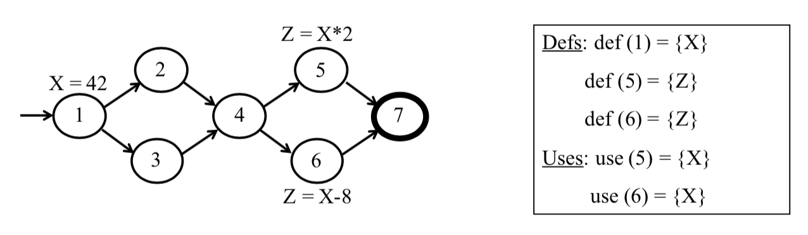**定义使用对(DU Pair)**：(l i, lj) ，变量v在l i处定义，并在l j处使用。
def(n) def(e) / use(n) use(e)
- 由节点n或边e定义的变量集
- 由节点n或边e使用的变量集
无重复定义(Def-clear)
- 存在一条由l i到l j的路径，对于这条路径上的每个节点nk和每条边ek，k≠i 且 k≠j，变量v不属于def(nk)和def(ek)，那么这条路径对于变量v是无重复定义的。
- 如果变量v存在一条由l i到l j的无重复定义的路径，我们说处于li的定义到达处于lj的使用。
定义使用路径(du-path)
- 定义使用路径是一条简单路径，并且对于变量v这是一条由节点ni到另一个节点nj的无重复定义路径，v在ni中存在于def(ni)而在nj中存在于use(nj)
- du (ni, nj, v)：变量v的定义使用路径集合，起始于ni，终止于nj。
- du (ni, v)：对于变量v，定义路径集合是起始于ni的定义使用路径的集合。
全定义覆盖(ADC)
- 对于每个定义路径集合S = du (ni, v)，TR包含S中至少一条路径d。
全使用覆盖(AUC)
- 对于每个定义对集合S = du (ni, nj, v)，TR包含S中至少一条路径d。
全定义使用路径覆盖(ADUPC)
- 对于每个定义对集合S = du (ni, nj, v)，TR包含S中每一条路径d。 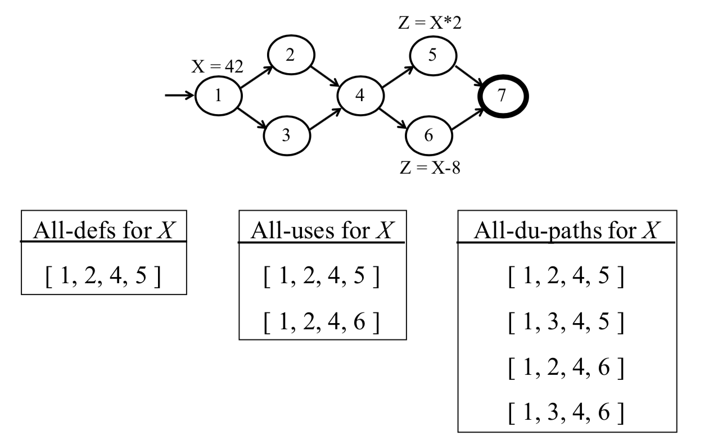
图覆盖准则之间的包含关系
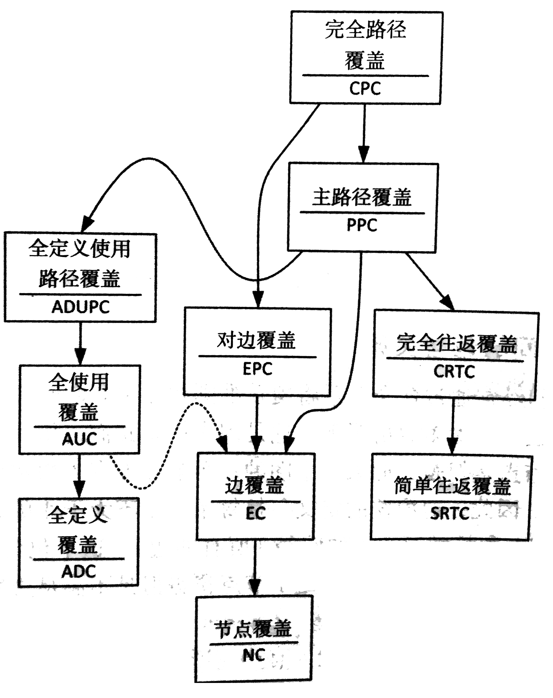
8. 事件流覆盖
- **事件流图(EFG)**是一个三元组M = <V, I, E>：
- V是一组表示对象所有事件的顶点。
- I ⊆ V是一组初始顶点。
- E ⊆ V × V是顶点之间的一组边，当vj可以在vi之后立即执行，(vi, vj) ∈ E。
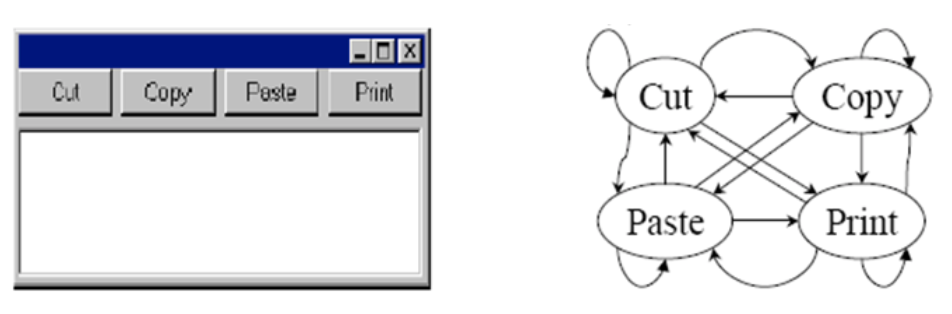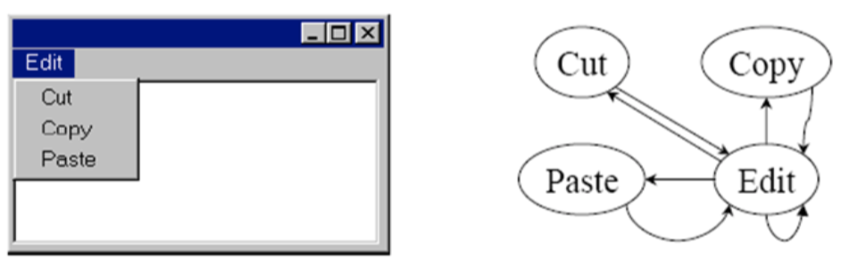
#####9. 变异测试
变异测试
- 将错误插入程序以测试测试用例是否接收它们的方法。
- 是一种对测试集的充分性进行评估的技术。
操作数变异操作符：将单个操作数替换为另一个操作数或常量。
表达变异操作符：更换一个操作符或者插入一个新的操作符。
等价变异体
- 存在没有被杀死的变异体，被称为等价变异体
- 虽然变异体语法不同，但通过测试难以发现，需要手动检查。
Mutation Score = 100 * K / (T - E)
K：被杀死的变异体数
T：变异体总数
E：等价的变异体数
主管程序员假设
- 被测模块由合格的程序员或设计师编写。 因此，如果模块不正确，则它与正确的模块不同，最多只有几个小故障。
耦合效应
- 由于仅通过简单故障将所有模块与正确模块区分开来的测试套件非常敏感，它还可以隐式区分更复杂的故障。
#####10. 逻辑覆盖
- 语句覆盖(SC)
- 判定覆盖(DC)
- 判定的true和false至少各执行一次。
- ((x>5) && (y>0)): true and false
- 条件覆盖(CC)
- 每个条件的true和false至少各被执行一次。
- (x>5) true and false
- (y>0) true and false
- 条件判定覆盖(C/DC)
- 同时满足DC和CC.
- 使得判定中的每个条件取到各种可能的值，并使每个判定取到各种可能的结果。
1 | // {(6, 1), (1,1)}--DC |
SC&DC&CC的包含关系
- DC ≥ SC
- CC not ≥ SC
- DC not ≥ CC CC not ≥ DC
- C/DC ≥ CC
- C/DC ≥ DC
MC/DC ≥ C/DC
多条件覆盖(MCC)
- 使得每个判定中条件的各种可能组合都至少出现一次。 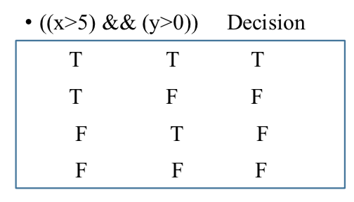
修正条件判定覆盖(MCDC)
- 每个条件都要独立影响判定结果(true和false各一次) 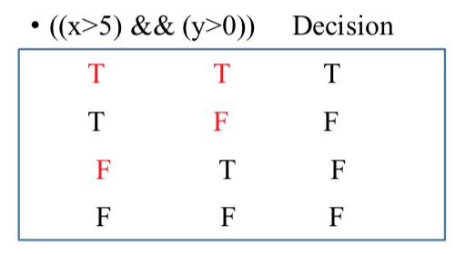
计数
- DC——2
- CC——2*n
- MC/DC——2*n+1
- MCC——2n
C4 自动化软件测试
- 自动化测试生成
- 测试用例生成
- 测试数据生成
- 自动化测试执行
- 自动化测试选择
- 针对修改部分的测试
- 针对测试需求的用例集约简
- 针对测试需求的用例排序
- 自动化测试修复
- 测试用例修复
- 测试用例演化
- 自动化测试扩增
C5 黑盒测试
5.1 随机测试
- 随机测试
- 测试用例完全随机生成
- 必须知道输入域
- 在输入域中选择随机点
- 自动化
- ART算法
1 | /* T = {} 是以前执行的一组测试用例*/ |
5.2 等价划分
等价划分
- 可以同等地应用于多个级别的测试(• 单元 • 整合 • 系统)
- 相对容易应用，无需自动化
- 易于调整程序以获得更多或更少的测试
输入域
- 程序的输入域包含该程序的所有可能输入
- 对于即使是小型程序，输入域也是如此之大，以至于它可能是无限的
- 测试一般是从输入域中选择有限的值集
- 输入参数定义输入域的范围
- 每个输入参数的域被划分为区域
- 从每个区域至少选择一个值
分区域
- 域D
- D的分区方案p
- 分区p定义了一组块b1，b2，… bn
- 分区必须满足两个属性：1.块必须两两之间不相交（不重叠）2.所有块共同覆盖域D（完整）
两种方法
- 基于接口的方法：直接根据各个输入参数开发特性，简单应用，在某些情况下可以部分自动化。
- 基于功能的方法：从被测程序的行为角度发展特征，更难开发，需要更多的设计工作，可以带来更好的测试，或者更少的测试。
基于接口的方法：
- 三角形有三个输入：q1=第一个边的输入与0的关系：大于，等于，小于
基于功能的方法：
- 三角形的类型：q1 =“几何分类” b1=不等边 b2=等腰但不等边三角形 b3=正三角形 b4=无效
- 几何分区q1的可能值：b1= (4, 5, 6)，b2 = (3, 3, 4) ， b3 = (3, 3, 3)， b4 = (3, 4, 8)
5.3 边界值分析
- 示例：
- 两个输入变量x1（a≤x1≤b）和x2（c≤x2≤d）。 测试用例包括：
- <x1nom，x2min>，<x1nom，x2min +>，<x1nom，x2nom>，<x1nom，x2max>，<x1nom，x2max->，<x1min，x2nom>，<x1min +，x2nom>，<x1max，x2nom>，<x1max-，x2nom>
- nomal，min，max
- 弱边界值分析
- Min- Min Min+
- Nom
- Max- Max Max+
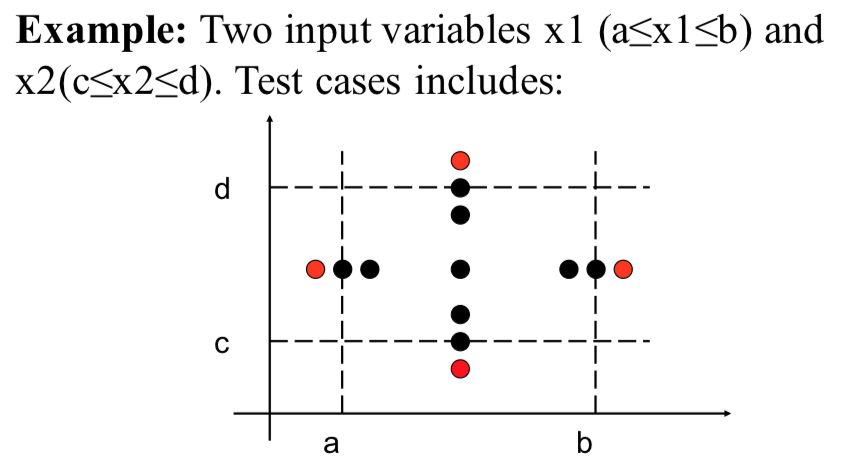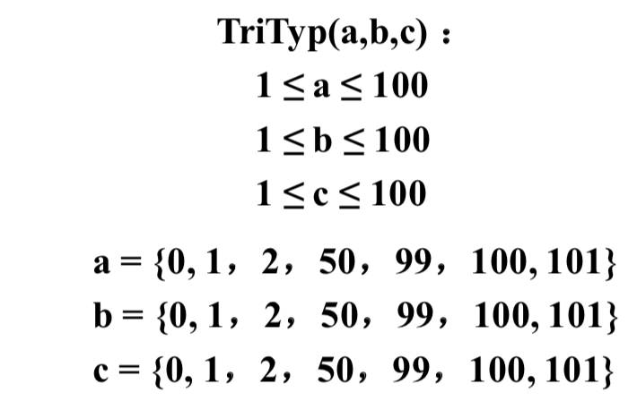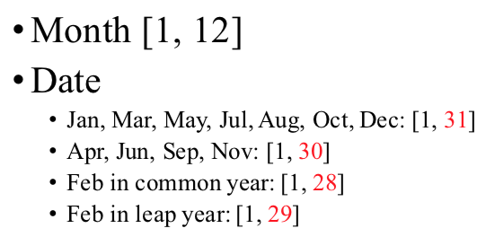
强边界分析
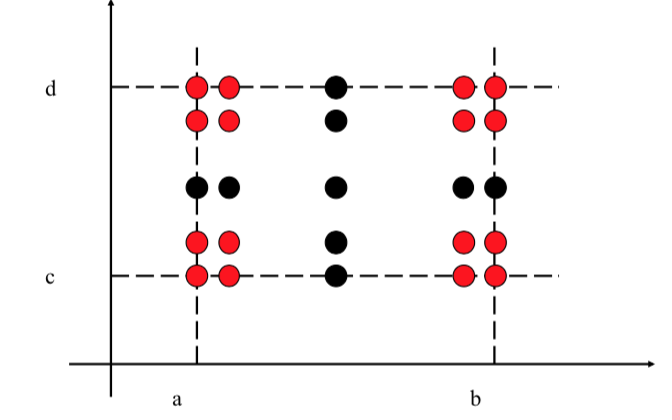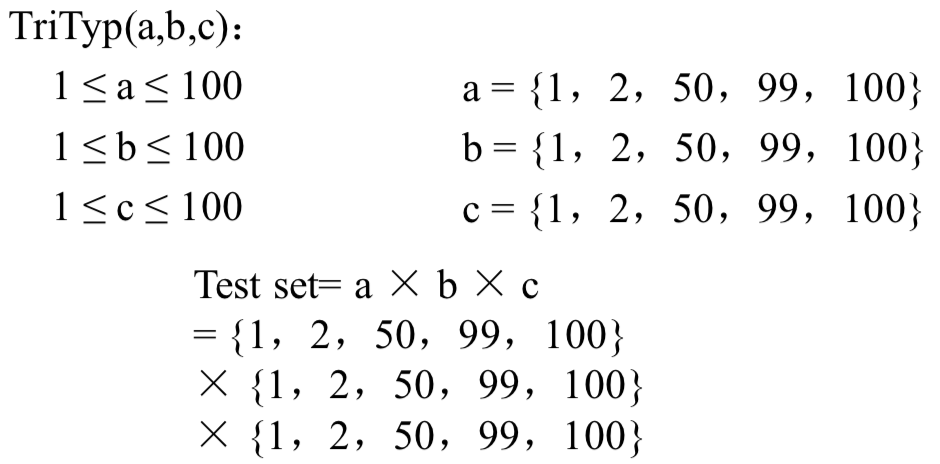
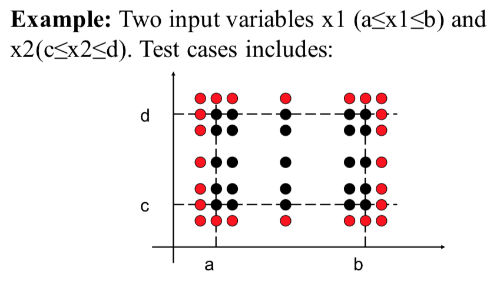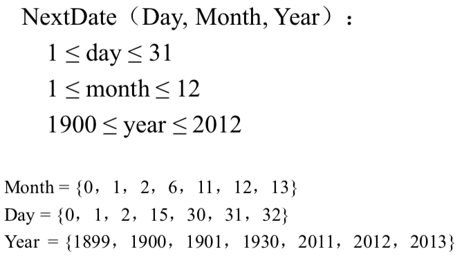
5.4 组合测试
- 弱等价类测试
- 强等价类测试
5.5 测试中的约束
- 合并输入变量
- 优化输入域
- 修改测试用例
5.6 决策表
- 决策表的优点
- 能够将复杂的问题按照各种可能的情况全部列举出来，简明并避免遗漏。
- 利用决策表能够设计出完整的测试用例集合。
- 决策表通常由以下4部分组成:
- 条件桩：列出问题的所有条件
- 条件项：针对条件桩中条件列出所有可能的取值
- 动作桩：列出问题规定的可能采取的操作
- 动作项：指出条件项各取值情况下应采取的动作
- 构造决策表的5个步骤:
- 确定规则的个数 ：有n个条件的决策表有2n个规则(每个条件取真、假值)
- 列出所有的条件桩和动作桩
- 填入条件项
- 填入动作项，得到初始决策表
- 简化决策表，合并相似规则
- 练习：
- 前一日函数DPreate是NextDate的逆函数，即给定一个月份、日期、年，会返回前一天的日期。
- 年的取值在1812年到2017年
- 日的取值在1日到31日之间
- 月的取值在1到12月之间
- 条件项(等价类划分)： 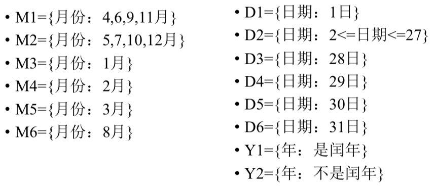
C7 功能、性能、移动应用测试
功能测试
- 根据产品特性和设计需求，验证一个产品的特性和行为是否满足设计需求。
- 正确性、可靠性、易用性。
性能测试
- 验证产品的性能在特定负载和环境条件下使用是否满足性能指标。
- 度量方法：响应时间、并发用户数、吞吐量、性能计数器、负载测试、压力测试
移动应用测试
- 手机系统、型号
- 传感器与屏幕(尺寸？)碎片化
软件缺陷的描述
- 软件缺陷的生命周期
- 严重性和优先级
- 缺陷的其它属性
- 完整的缺陷信息
- 缺陷描述的基本要求
- 缺陷报告的示例
软件缺陷的生命周期
- 一个软件缺陷被发现、报告到 这个缺陷被修复、验证直至最后关闭的完整过程。
基本的缺陷生命周期
- 发现-打开:测试人员找到软件缺陷并将软件缺陷交给开发人员。
- 打开-修复:开发人员再现、修复缺陷，然后提交给测试人员去验证。
- 修复-关闭:测试人员验证修复过的软件，关闭已不存在的缺陷。
严重性(severity)：衡量缺陷对客户满意度的影响程度
- 致命的(fatal)、严重的(critical)、一般的(major)、微小的(minor)
优先级(Priority)：指缺陷被修复的紧急程度。
缺陷述的基本要求
- 单一准确
- 可以再现
- 完整统一
- 短小简练
- 特定条件
- 补充完善
- 不做评价